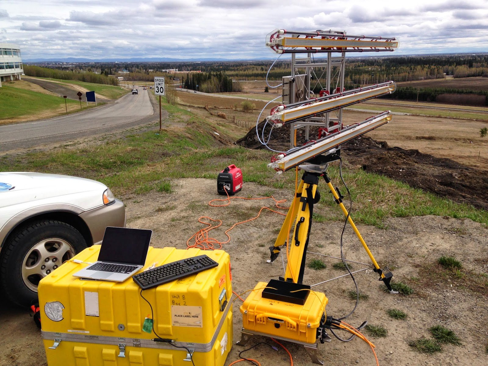

This week, I've been in Fairbanks learning how to use radar to gain an unprecedentedly
sharp view of glacier motion. We'll be deploying this technology in Greenland this
summer.

While camping at the terminus of Rink Isbrae (71.5 degrees N) for 8 days, we'll be
scanning the toe of the glacier every 3 minutes and recording motion between consecutive
scans. Variations in glacier flow speed at these high frequencies can tell us about the
forces that drive and resist glacier motion, as well as connections between motion and
iceberg production. These data will support the broader project goal of understanding
the factors controlling the retreat and acceleration of glaciers that flow into the
ocean.
Thanks go to Mark Fahnestock, a professor at the Geophysical Institute
at the University of Alaska Fairbanks, for lending our Univ. of Texas and Univ. of
Kansas team one of his new radar instruments for our fieldwork.